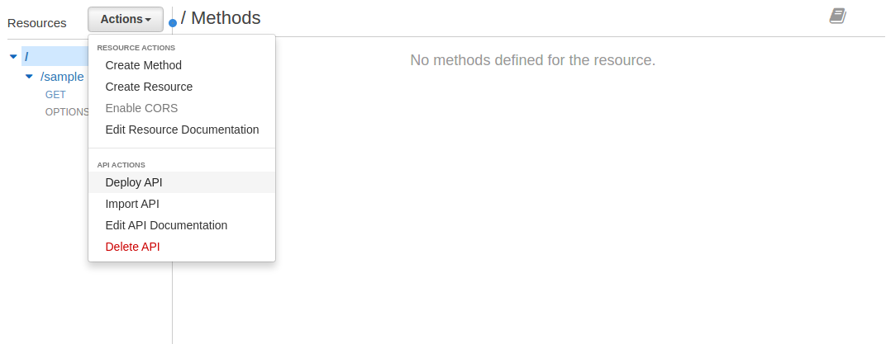
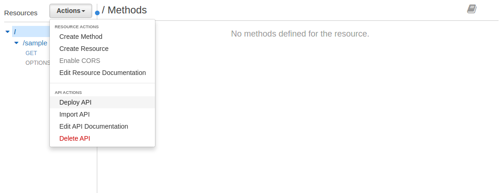
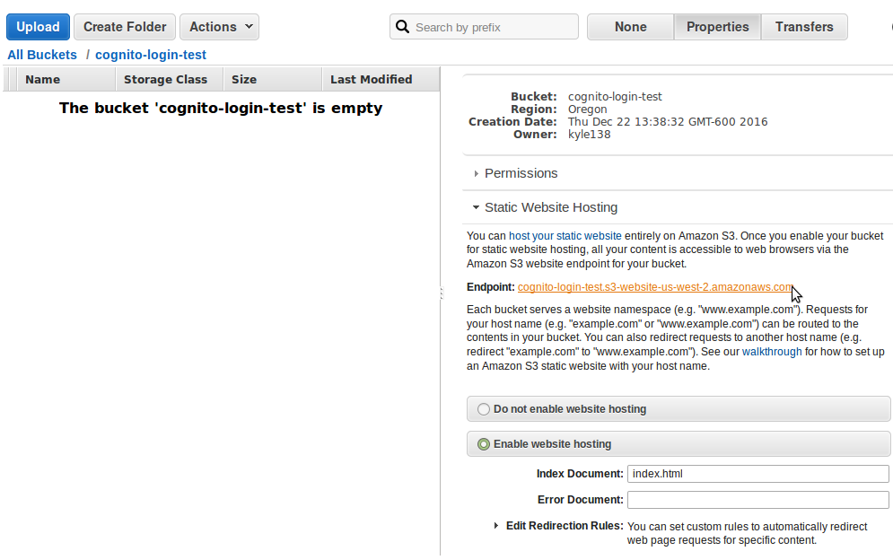
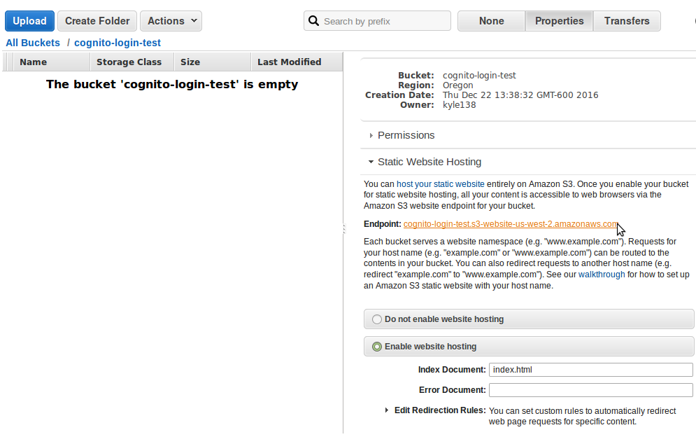

'use strict';
console.log('Loading hello-world function');
exports.handler = (event, context, callback) => {
callback(null, "Greetings and salutations."); // Make first contact
};
 

{
"Version": "2012-10-17",
"Statement": [
{
"Sid": "PublicReadGetObject",
"Effect": "Allow",
"Principal": "*",
"Action": "s3:GetObject",
"Resource": "arn:aws:s3:::NAMEOFBUCKET/*"
}
]
}
 

| clientId | Enter the Google API Client ID that you downloaded in Step 4.10 |
| clientSecret | Enter the Google API Client Secret that you downloaded in Step 4.10 |
| redirectUrl | Enter the authorized redirect URI that you specified in Step 4.8.c |
| clientId | Enter the Google API Client ID that you downloaded in Step 4.10 |
| clientSecret | Enter the Google API Client Secret that you downloaded in Step 4.10 |
| redirectUrl | Enter the authorized redirect URI that you specified in Step 4.8.c |
{ "code": "$input.params('code')" }
{
"Version": "2012-10-17",
"Statement": [
{
"Effect": "Allow",
"Action": [
"execute-api:*"
],
"Resource": [
"arn:aws:execute-api:us-west-2:304786516436:miuk21dh0g/*/GET/sample"
]
}
]
}

var configuration =
{
"s3Origin": "http://cognito-login-test.s3-website-us-west-2.amazonaws.com/",
"apigGenerateAuthUrl": "https://x7fogme9hg.execute-api.us-west-2.amazonaws.com/prod/generateauthurl",
"apigGenerateToken": "https://x7fogme9hg.execute-api.us-west-2.amazonaws.com/prod/generatetoken",
"IdentityPoolId": "us-west-2:801ee7b2-9c85-4d29-b0cb-ad965887558d",
"awsRegion": "us-east-1"
}